AUTHENTIC ARTICLES
1.Pochampally Sarees
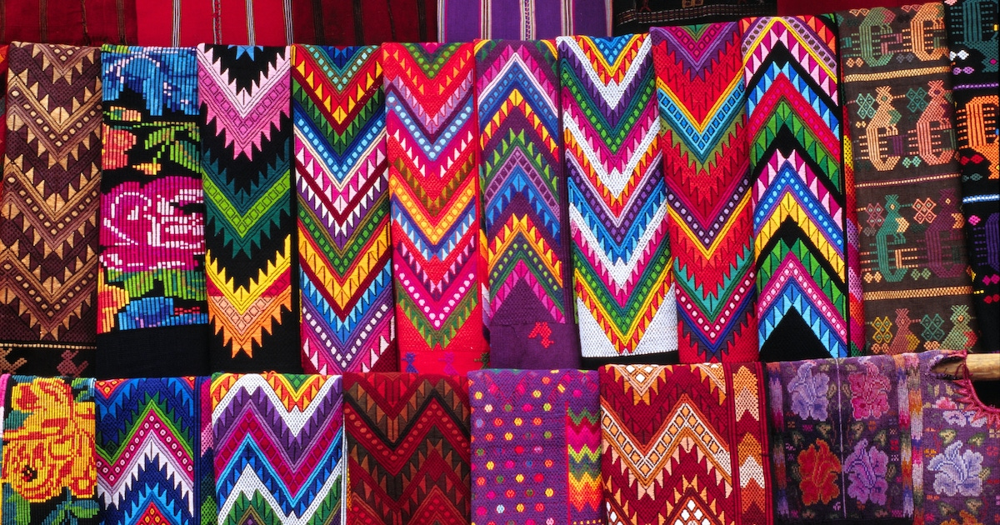 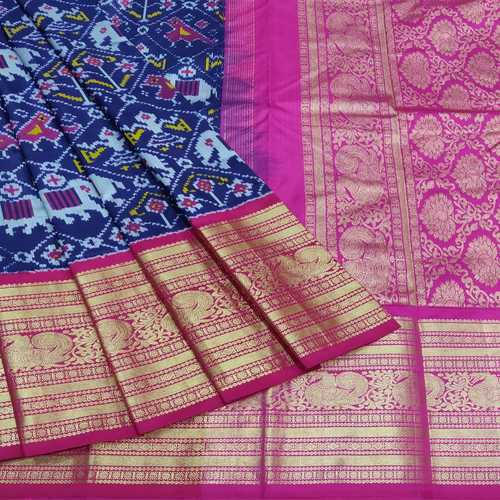 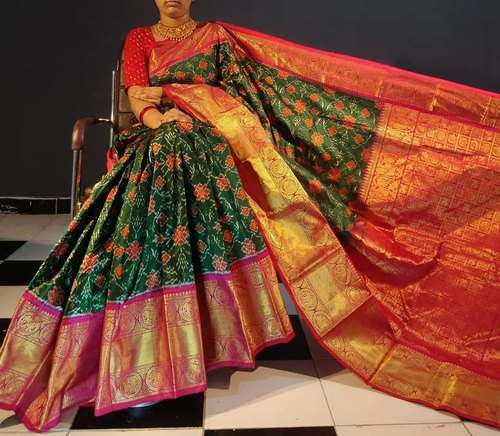
Every woman who wears a Sari must have a Pochampally Sari in her collection. The choice is between silk or cotton. Once you made that choice, you need to choose between the wide range of color combinations available.Pochampally Sarees Rs 9,700/ Piece Ikkat Sarees Rs 8,900/ Piece Handloom Sarees Rs 11,550/ Piece. If the weaving process intrigues you, head to Pochampally village which is only 45 km away from the city.When buying Pochampally sarees, ensure that you buy from a store that has proof of registration for the fabric. This proves that the store is selling you authentic sarees. As we mentioned, these sarees represent generations of culture and tell a compelling story.
2.Pearls – Hyderabad Souvenirs to shop
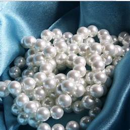 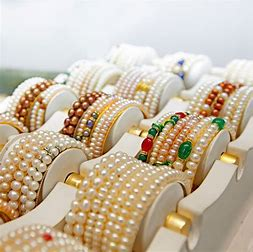 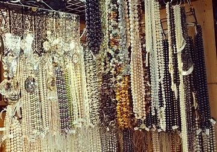
Anyone who grew up in India knows that Hyderabad is well known for its pearls. It has been a center of the pearl trade for many centuries now. Yes, with hardly a water body around, it can not be the source of pearls.Prices range from as low as Rs 100/- for simple earrings to a few lakhs. It all depends on the pearls you pick.Fake or imitation pearls are man-made beads. They’re often made from glass, plastic, alabaster or shells that have a pearly coating to give a similar appearance to real pearls. Some fake ones can easily be spotted but some can look very close to the real ones. The most well-known one, Majorica pearl, which is made out of glass, can often fool your eyes.Buy Pearls at Modi Pearls.
3.Lac Bangles
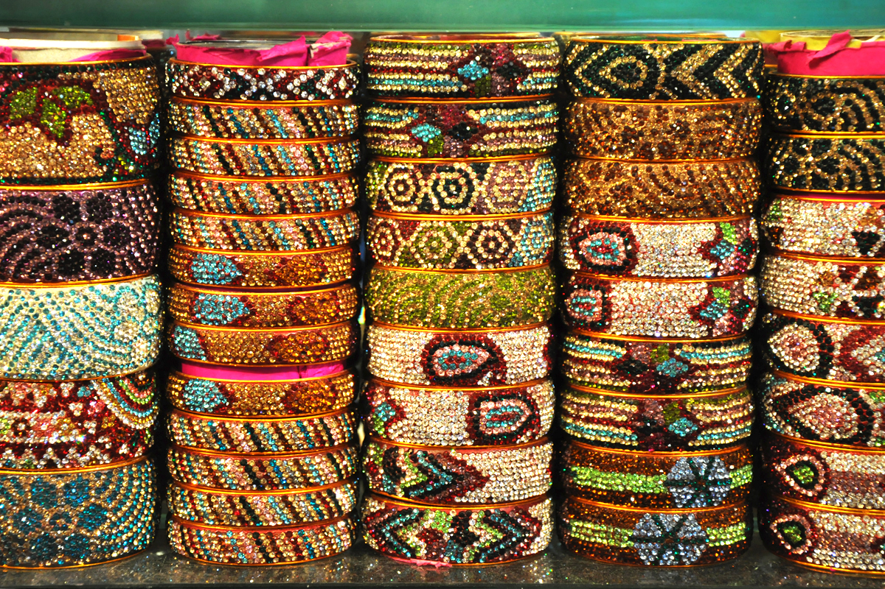 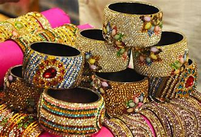 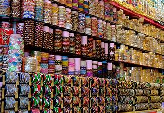
The lane connecting Char Minar to Chowmahalla goes by the popular name of Laad Bazaar. You just can not miss the bright lacquer bangles sold here. Each bangle is crafted manually. Each stone is individually pasted to create myriad patterns. Prices – Very affordable.Laad Bazaar is open for customers throughout the week. You can visit the market between 9 AM and 11 PM. Lac bangles from the city make a perfect gift for all the girls and women around you.
FAMOUS PLACES IN HYDERABAD
1. Char Minar
2. Golconda Fort
3. Ramoji Film City
4. Hussain Sagar Lake
5. Birla Mandir
6. Chowmahalla Palace
7. Qutub Shahi Tombs
8. B.M. Birla Science Museum
9. Nehru Zoological Park
10. Salar Jung Museum
11. Laad Bazaar
12. NTR Garden
13. Snow World
14. Shri Jagannath Temple
15. Mecca Masjid
 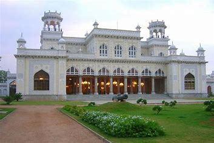
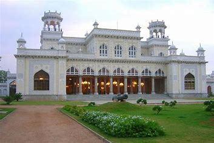
 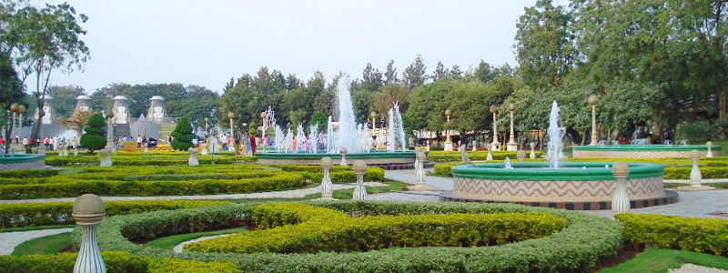
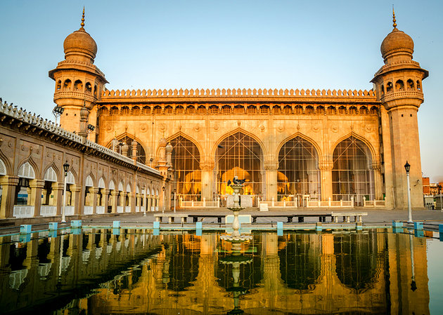
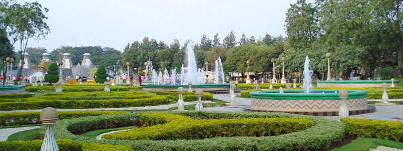
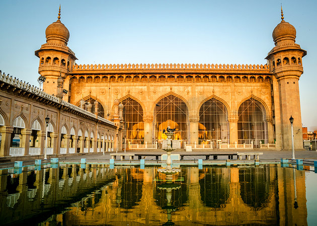
FAMOUS FOOD ITEMS IN HYDERABAD
1.Hyderabadi Biryani
2.Hyderabadi Haleem
3.Hyderabadi Dum ka Murgh
4.Mirchi ka Salan
5.Shikampuri Kebab
6.Hyderabadi Phirni
7.Double ka Meetha
8.Khubani ka Meetha
9.Jauzi Halwa
10.Badam Ki Jaali
11.Qubani Ka Meetha
12.Irani Chai
 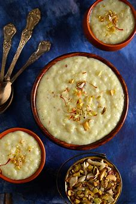
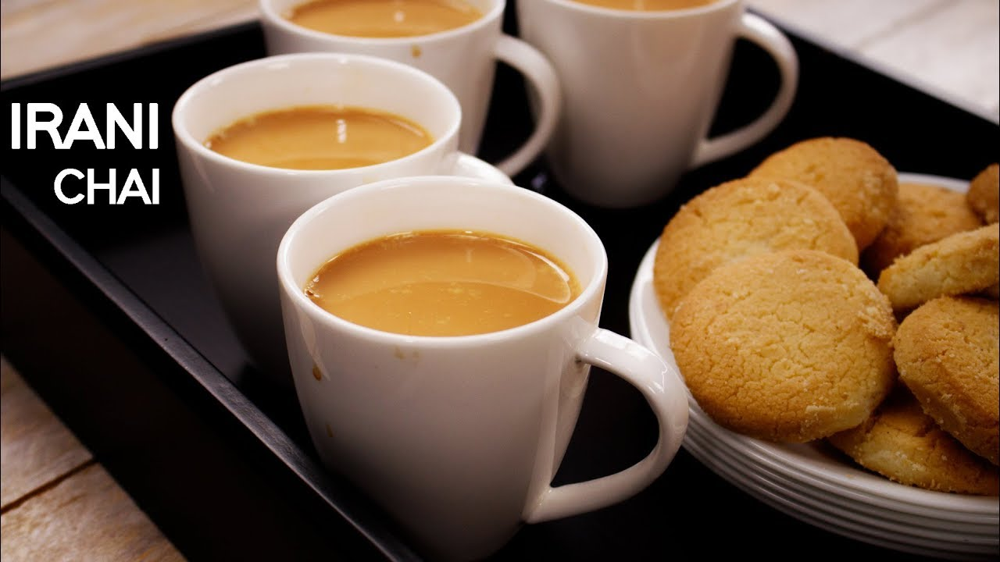
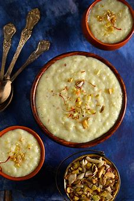
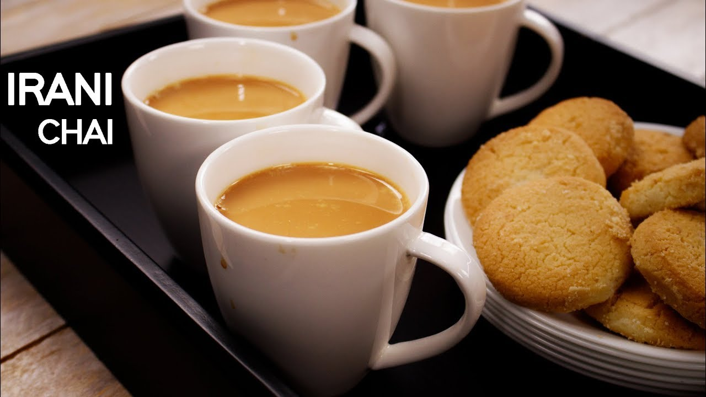
BEST SHOPPING PLACES IN HYDERABAD
1. Jummerat Bazaar
2. Laad Bazaar
3. Shahran Market
4. Abids Street
5. Begum Bazaar
6. Perfume market
7. Charminar Bazaar
8. Shilparamam
9. Pot Bazaar
10. Antique Market
EXPLORE HYDERABAD